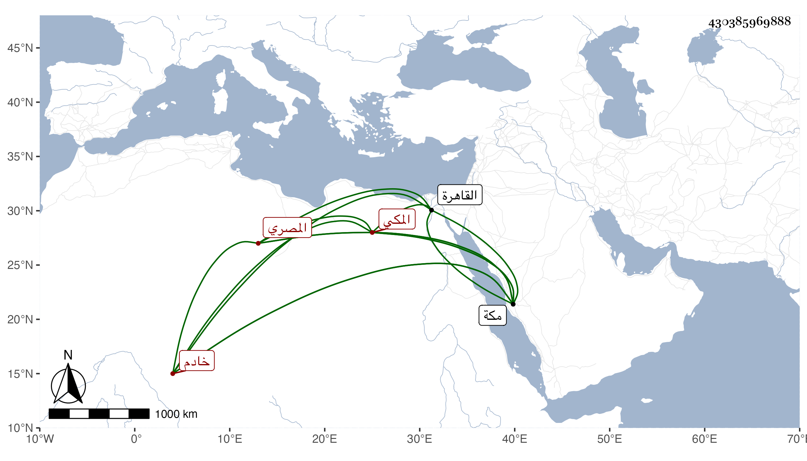

0902Sakhawi.DawLamic.ITO20230111-ara1.EIS1600.430385969888
Biography ID: 430385969888
345
عمر بن علي بن محمد بن علي بن خليل المصري الأصل المكي والد علي الماضي ويعرف بابن السيرجي خادم قبة الوحي ودار أم المؤمنين خديجة المعروفة بمولد السيدة فاطمة الزهراء بزقاق الحجر والماضي أبوه . ولد قبل الخمسين بمكة وقرأ علي بها الأربعين النووية وغيرها وسمع علي غير ذلك وكان في صغره قرأ القرآن والمنهاج أو بعضه ثم تشاغل عن ذلك . وقدم القاهرة وهو كثير التطور عديم التصور يذكر بين أهل مكة بأمور الله أعلم بها .
